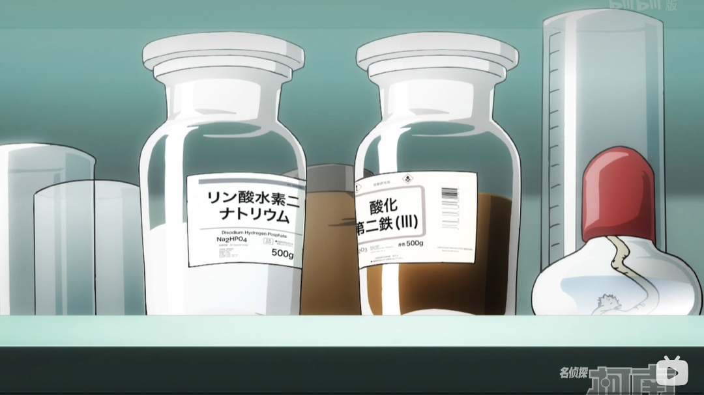
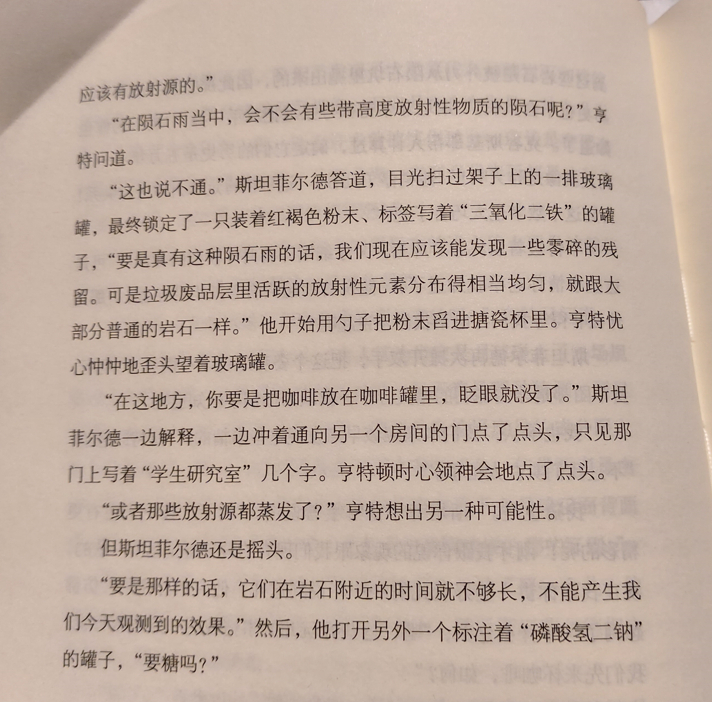
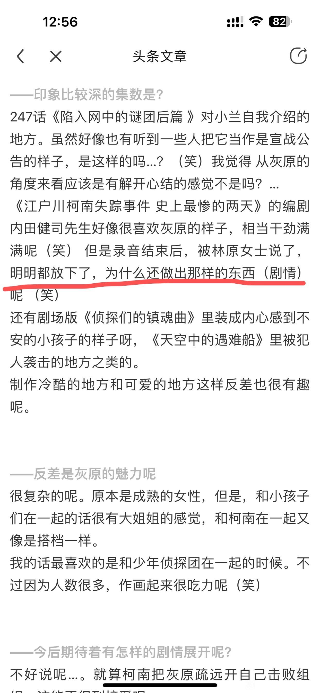

这篇分析（如果算的话）主要是考证志保（shiho）这个名字是否是取自星（hoshi），有关工藤新一的新一（shinichi）已经是众所周知。那么只要我们在漫画或动画中找到志保（shiho）确实取自星（hoshi）的证据，老贼的嘴再硬也挡不住读者们合理推断志保和新一的名字都取自那一位名叫星新一的推理小说家。那么我们就开始吧(划掉)。
让我们回到开始的开始，没错，就是《Episode “ONE”》，真·第一集的开始，我们的志保正在做什么呢，当然是泡咖啡，泡的什么咖啡呢？啊，原来是三氧化二铁+磷酸氢二钠的咖啡（如图.1所示）。过去大家往往认为这仅仅是志保同学作为奇迹般可爱的科学家的恶趣味，但这和志保的名字取自何处有什么关系呢？请看图.2，这是一篇小说中描述的情形，两位科学家正在饮用由三氧化二铁+磷酸氢二钠制成的咖啡，而这篇小说的标题，叫作：《星之继承者》（《Inherit The Stars》，《星を継ぐもの》，抱歉，日语我是一点都不会，只能复制粘贴了。），由英国小说作家James P. Hogan于1977年发表。由此我们就得到了一直想要证明的结论：宫野志保——星之继承者；志保的名字，继承自星。


2023-10-28 06:19 | V宇宙之主V:我不知道这个点之前有没有大佬发过。。。我不管我不管，今天我就要发。2023-10-28 23:14 | crjiaqiz:不管不管，就是要开香槟🍾🍾
下面是暴论阶段，那么《星之继承者》又讲述了一个什么样的故事呢，这跟我们的《死神小学生》又有什么关系呢？注意，以下涉及对《星之继承者》剧情的严重剧透。
2023-10-28 10:24 | 赤炎之子赤道:我还没看2023-12-26 12:26 | 176******25725🔅:三部曲已经买了三年了
我还没看呢
首先，《星之继承者》是一部什么样的小说？个人理解，这是一部科幻推理小说。由于小说本身是以人类视角展开并开展推理的，这对于今天的内容来说并不重要，所以在此我们以仙帝视角站在时空长河之上，重新展开介绍整个故事：两千五百万年前，一群在太阳系考察的外星大只佬从地球“邀请“（绑架）了一批小瘦猴子及其他一些地球土著去往他们在太阳系新开的动物园星球，成为展品并维持动物园的环境。而后，动物园星球大气化学环境骤变，大量的动物园展品和动物园土著死亡，外星大只佬们眼见动物园项目烂尾，为躲避投资人追杀，纷纷超光速跑路从此不知所踪。但被绑去的小瘦猴子们硬是从这恶劣的环境下存活了下来进化成了恐怖直立猿并发展出了高科技的行星际文明，并在自己的卫星上建立了基地。但这只是故事的开始，恐怖直立猿们也无愧于自己的名字，他们在战争中对自己的星球使用了”地爆天星“，由此开启了”流浪月球“时代。坏消息是，老家是成矿了，但咱的卫星还在！这颗卫星又辗转被五万年前的地球捕获，这群来自异星恐怖直立猿们为夺那一线生机，不得不重返地球，在一轮又一轮的生存挑战中熬了下来，打败了地球土著，占据了主导地位，那么代价是什么呢？代价是他们忘记了自己从何而来，忘记了自己所有的科技而重归原始。直到五万年后，恐怖直立猿们的后代再次发展出了星际科技，重返月球，并找到了当初已死在月球的祖先们的尸体，而后经过大量的考察工作，终于拼凑出了有关自身文明起源的一切。而那早已被毁的起源母星则被后代们称为”慧神星“（Minerva，密涅瓦）。
于是，我们得到了万物起源伦敦篇女主的名字“密涅瓦“。
于是，我们得到了万物起源伦敦篇女主的名字“密涅瓦“。
2024-01-14 09:48 | NatsumiSakurai:加州州徽有密涅瓦，好了，宫野在加州上大学
综上所述，我认为志保的故事线很大程度上映照自《星之继承者》，从被绑走给组织卖命，到为求一线生机吞下A药回归儿童的身体。老贼啊老贼，快说，你是不是故意的。
我文笔不太好，大佬们轻喷。
2023-10-28 06:35 | 贴吧用户_GMSD67V:樱花班新一也是先想到圣诞节🎄的星星2023-10-28 06:42 | 世界上没有真理:回复 贴吧用户_GMSD67V :我也想到櫻花班了

文吧吧友們都好厲害!觀察力也太細微，遲早整個名柯暗線都會被扒光
这个文章是那一年的
2023-10-28 06:44 | V宇宙之主V:1977年的小说
前排
进化这个词最近存在感好高
青山刚昌访谈讲过就是致敬嘞
开幕雷击
先蹲为敬
据我所知，之前没有看到类似的观点
先蹲为敬
据我所知，之前没有看到类似的观点
还有高手
好天才的观点啊，而且这还是推理小说，73真的有可能看过的。
从“星野辉美”看，73是考虑了把宫野志保的名字倒着读的情况
化学白痴问一下图中那两瓶是啥？
2023-10-28 08:26 | 贴吧用户_0WaQGey:就是三氧化二铁和磷酸氢二钠2023-10-28 09:02 | 永恒之山的小窝:回复 贴吧用户_0WaQGey :不好意思能再说简单点不？比如用途？2023-10-28 09:06 | V宇宙之主V:（化学没及格过的人）
回复 永恒之山的小窝 :三氧化二铁就是铁锈的主要成分，如果是高中的话会讲这个跟酸的反应；磷酸氢二钠一般是用来配置缓冲溶液，控制体系的pH值（酸碱性）在一定的条件下不发生显著的变化。2023-10-28 09:07 | 永恒之山的小窝:回复 V宇宙之主V :OK，大概明白了，谢谢您

好久没看到这么高质量的分析文了，最近吧里都在骂兰，认真分析的少了很多，点赞👍🏻
三氧化二铁和磷酸氢二钠的对照实在是很难认为是巧合，特别是还是在73亲自做的真第一集。。。。
志保名字也是源于星新一的可能性进一步上升了
志保名字也是源于星新一的可能性进一步上升了
2023-10-28 08:57 | 世界上没有真理:跟新一兩人一人一半共享星新一這個名字，這樣看來二分之一福爾摩斯更真了
还有高手
好家伙
博学！
谢谢你的剧透预警，被“科幻推理”这个题材提起了兴趣的我直接越过了一整大段🥲🥲🥲
好家伙好家伙
 蹲
蹲+3
这种帖子该加精也该常常浮在头条呀，好好分析柯、哀、柯哀才是这个吧存在的意义

2023-10-29 09:12 | 世界上没有真理:竟然有採訪!!!看來志保這個名字不可能是取自網友而已
楼主细啊
查了一下，该小说被称为“征服科幻、推理、ACG三大圈层的至高神作”。主打的就是一个，“当科学遇上推理”。
（某种意义上）这不就是，当灰原哀（宫野志保）遇上（江户川柯南）工藤新一吗！
查了一下，该小说被称为“征服科幻、推理、ACG三大圈层的至高神作”。主打的就是一个，“当科学遇上推理”。
（某种意义上）这不就是，当灰原哀（宫野志保）遇上（江户川柯南）工藤新一吗！
2023-10-29 10:41 | 夏20_15:小哀的科学属性加小柯推理属性，合二为一了属于是。1/2的设定。
还有高手
说起来这本书的日文版译者好像就在前几天逝世了，也作为代表译作列出来了呢。
在真第一话的话，如果是不合适的捏他，我认为青山会毙掉，就像某些剧场版的OOC情节。
在真第一话的话，如果是不合适的捏他，我认为青山会毙掉，就像某些剧场版的OOC情节。
cy
太强了
蹲一个，看看以后会不会被call back
同志们这里是啥意思啊🤔

2023-11-03 07:39 | 没字也行:放下了不能再捡起来吗？人生那么长2023-11-03 07:48 | 随意♬飘荡:正常，林原一直都挺悲观的2023-11-03 22:32 | 贴吧用户_J7eUEPR:林原对小哀这个角色是有感情的，之前提过想让青山创作一个新角色给小哀幸福，结果被拒绝了（当时的语境下很多人理解为小哀结局会是BE），也提过几次如果柯南和新一是两个人就好了；《史上》是2014年的作品，往前几年动画有很多直白的新兰戏，让人感觉放下也许更好；2015年M19才明确 我的眼中只有你

？还有高手
上面的那些扯兰神的我都删了，请要讨论兰神的回自己的分析文吧独立开贴，在那里可以收获更多拥趸
厉害！！
nb
我看百度百科的词条上说宫野志保这个名字取自网友，不过我没考证过
好文，顶一下
头一次见这个，有道理的
我看到过一样的观点，但是没有举出这本书。既然给药剂单独的镜头那一定有寓意!